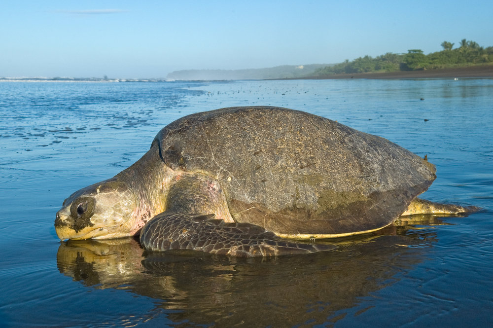
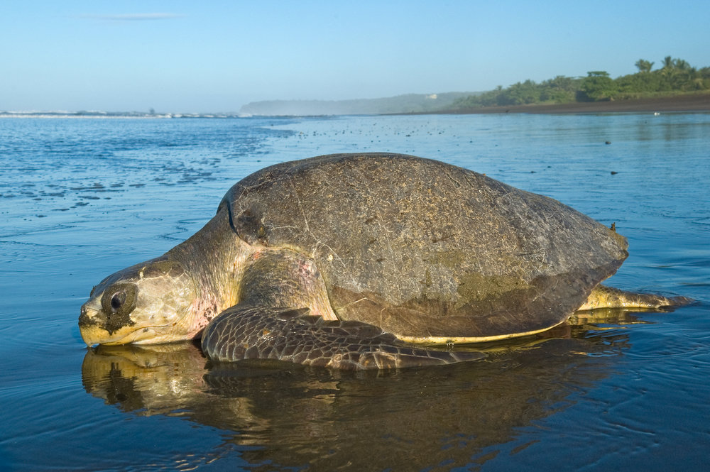
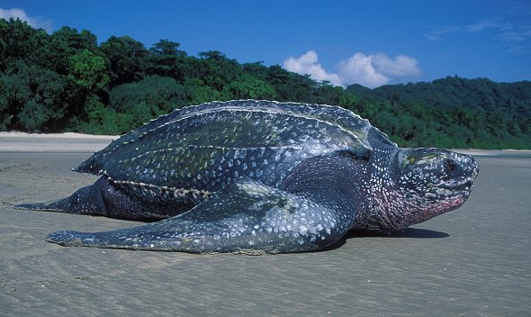

TURTLE CATEGORIES
Olive Ridley Turtle (Lepidochelys olivacea)

 

The Olive Ridley Turtle is a species of sea turtle that can be found in the coastal waters of Sri Lanka, contributing to the country's diverse marine ecosystem.
Olive Ridley Turtles are known for their synchronized nesting behavior, where hundreds and even thousands of females come ashore simultaneously to lay their eggs.
Rekawa Beach and Kosgoda Beach are popular nesting sites for Olive Ridley Turtles in Sri Lanka.
These turtles have a distinctive olive-colored carapace and are relatively small compared to other sea turtle species.
They have a rounded, heart-shaped shell that allows them to navigate through the ocean with ease.
Olive Ridley Turtles are omnivorous, feeding on a variety of prey including jellyfish, crustaceans, mollusks, and algae.
They play a vital role in maintaining a balanced marine ecosystem.
Conservation efforts in Sri Lanka focus on protecting Olive Ridley Turtle nesting sites, implementing sustainable fishing practices, and raising awareness about the importance of their conservation among local communities and visitors.
Turtle hatcheries in Sri Lanka play a significant role in the conservation of Olive Ridley Turtles.
They collect eggs from vulnerable nesting sites, provide a safe environment for incubation, and release the hatchlings into the sea, increasing their chances of survival.
Olive Ridley Turtles face threats such as habitat loss, pollution, entanglement in fishing gear, and predation.
Climate change and rising sea levels also pose challenges to their nesting habitats.
Efforts are being made to enforce laws and regulations against the illegal trade of Olive Ridley Turtle products, including their eggs and meat, which helps protect this vulnerable species.
Sri Lanka's commitment to the preservation of Olive Ridley Turtles contributes to global conservation efforts and ensures the long-term survival of this species and the overall health of marine ecosystems.
Green Turtle (Chelonia mydas)


The Green Turtle (Chelonia mydas) is a species of sea turtle found in the coastal waters of Sri Lanka, making it an important part of the country's marine biodiversity.
Green Turtles are known for their large size, with adults reaching up to 1.5 meters in length and weighing over 200 kilograms.
They have a distinctive heart-shaped carapace and powerful front flippers, which aid in their swimming and diving abilities.
In Sri Lanka, Green Turtles can be found nesting in several locations, including Rekawa Beach, Kosgoda Beach, and the beaches around Galle and Bentota.
These nesting sites are protected to ensure the survival of the species and provide opportunities for visitors to witness nesting and hatching events.
Green Turtles are herbivores, primarily feeding on seagrass, algae, and other marine vegetation.
They play a vital role in maintaining the health of seagrass ecosystems by grazing and controlling the growth of seagrass beds.
Conservation efforts in Sri Lanka focus on protecting Green Turtle nesting sites, implementing sustainable fishing practices, and reducing pollution and plastic debris in their habitats.
The implementation of Marine Protected Areas and the involvement of local communities in conservation initiatives contribute to the long-term survival of the Green Turtle population.
The Green Turtle is an endangered species globally, and the conservation efforts in Sri Lanka contribute to the worldwide conservation of this iconic marine creature.
By protecting the habitats and nesting sites of Green Turtles, Sri Lanka plays a significant role in preserving the biodiversity and ecological balance of its coastal waters.
Hawksbill Turtle (Eretmochelys imbricata)

The Hawksbill Turtle is a critically endangered species of sea turtle found in the coastal waters of Sri Lanka, adding to the country's rich marine biodiversity.
Hawksbill Turtles are known for their strikingly beautiful shell with overlapping scales or "scutes," which have commercial value, making them highly vulnerable to illegal trade and poaching.
Sri Lanka is home to several important nesting sites for Hawksbill Turtles, including Pigeon Island, Rekawa Beach, and the beaches around Trincomalee.
These sites are protected to ensure the conservation and survival of this species.
Hawksbill Turtles have a specialized diet, primarily feeding on sponges, which helps maintain the health of coral reef ecosystems by controlling sponge populations.
The population of Hawksbill Turtles in Sri Lanka faces numerous threats, including habitat degradation, pollution, entanglement in fishing gear, and the illegal trade of their shells and eggs.
Conservation efforts in Sri Lanka focus on protecting Hawksbill Turtle nesting sites, implementing sustainable fishing practices, and raising awareness about the importance of conservation among local communities and visitors.
Turtle hatcheries in Sri Lanka play a significant role in the conservation of Hawksbill Turtles.
They collect eggs from vulnerable nesting sites, provide a safe environment for incubation, and release the hatchlings into the sea, increasing their chances of survival.
Efforts are being made to enforce laws and regulations against the illegal trade of Hawksbill Turtle products, including their shells and tortoiseshell items, which helps protect this endangered species.
Sri Lanka's commitment to the preservation of Hawksbill Turtles is recognized internationally, as the country is a signatory to various global agreements and conventions aimed at conserving marine turtles and their habitats.
By safeguarding the nesting sites and implementing conservation measures, Sri Lanka contributes to the global efforts in protecting and preserving the critically endangered Hawksbill Turtle population.
Leatherback Turtle (Dermochelys coriacea)
The Leatherback Turtle is the largest species of sea turtle and is critically endangered.
It can be found in the coastal waters of Sri Lanka, adding to the country's diverse marine ecosystem.
Leatherback Turtles have a unique soft and flexible shell, which distinguishes them from other sea turtle species.
Their large size and streamlined body enable them to dive to great depths in search of their primary prey, jellyfish.
Sri Lanka is a significant nesting site for Leatherback Turtles, with beaches like Rekawa and Sangamankanda witnessing nesting activity.
These nesting sites are protected and managed to ensure the survival and conservation of this endangered species.
They play an important ecological role in controlling jellyfish populations and maintaining the balance of marine ecosystems.
Leatherback Turtles face numerous threats in Sri Lanka, including habitat degradation, pollution, entanglement in fishing gear, and ingestion of marine debris.
Climate change also poses challenges, as it affects nesting habitats and alters the availability of their food sources.
Conservation efforts in Sri Lanka focus on protecting Leatherback Turtle nesting sites, implementing sustainable fishing practices, reducing pollution and marine debris, and raising awareness about the importance of their conservation.
Turtle hatcheries in Sri Lanka contribute to the conservation of Leatherback Turtles by monitoring nesting activities, relocating eggs to protected areas, and releasing hatchlings into the sea under controlled conditions to improve their chances of survival.
Strict regulations and enforcement against illegal trade and poaching of Leatherback Turtles and their eggs are in place to combat the threat of illegal activities.
By preserving nesting habitats, implementing conservation measures, and addressing the various threats they face, Sri Lanka aims to ensure the long-term survival of the critically endangered Leatherback Turtle population.
The Leatherback Turtle is not commonly found in high population densities in Sri Lanka.
Leatherback Turtles are known for their extensive migrations across oceans, and their nesting sites are primarily found in other regions of the world.
| Name of the turtle | Other Names | What it consumes | Where it is found |
|---|---|---|---|
| Olive Ridley Turtle | Lepidochelys olivacea | jellyfish, sea grasses, algae, crustaceans, mollusks, and other small invertebrates | Rekawa Beach in the Southern Province, Kosgoda Beach in the Western Province, and Pottuvil Point in the Eastern Province |
| Green Turtle | Chelonia mydas | seagrasses found in coastal areas,algae,other marine plants | Rekawa Beach and Kosgoda Beach in the Southern Province, Pigeon Island National Park in the Eastern Province, and the beaches around Galle and Bentota in the Western Province. |
| Hawksbill Turtle | Eretmochelys imbricata | consume other invertebrates such as jellyfish, sea anemones, shrimp, and mollusks | Hikkaduwa Marine National Park, Pigeon Island National Park, and the Great Basses Reef |
| Leatherback Turtle | Dermochelys coriacea | consume jellyfish as their main food source | their presence is sporadic, and specific locations where they can be reliably encountered are less defined |